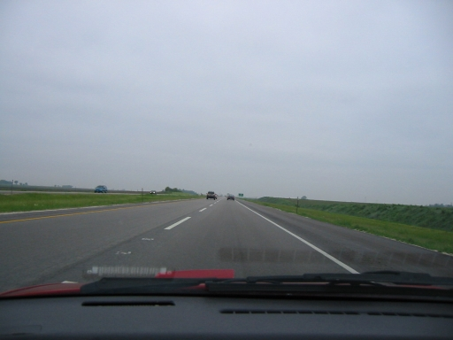
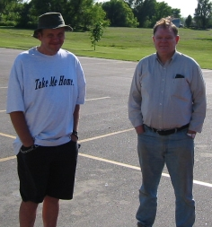
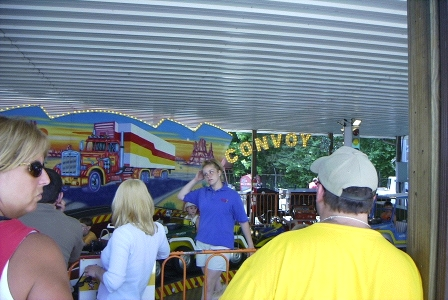
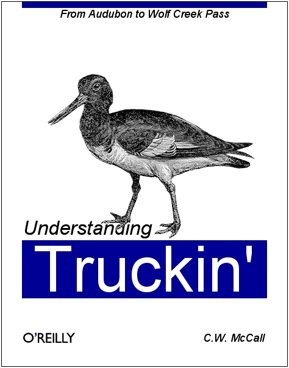

The Legend-News
What We Got Here in this edition of The Legend-News.
- C.W. McCall Tour 2002
- Meanwhile, Back At The Critter Ranch
- A Really Tiny Convoy
- …and Other Events
- Song A’ Th’ Week: "Old Glory".
Caution: this newsletter contains subtle humor. You have been warned.
C.W. McCall Tour 2002
Asphalt is for wimps
(The Legend-News (okay, Ed.) spent June 5th travelling from McHenry, Illinois to Omaha, Nebraska, so he gets to tell the tale.)
Hi, I'm Ed., and I'll be your tour guide.
Thursday, June 6, 6:25 a.m. I left McHenry, bound for Omaha. West to Woodstock, south on Illinois 47 to I-88, then west to Iowa. A buck-ninety for tolls, but that's Illinois. 88 ended, and I continued on I-80. I reached Leclaire, Iowa (just over the Mississippi) at 9:30.


I-80 in Iowa. Lots of flat, straight road. Really flat and really straight.
Here's your history lesson for this week. You may recall that some guy named Horace Greeley said "Go west, young man." Well, the young man did, and here's where he stopped: Grinnell, Iowa.


Historical marker on I-80, near Grinnell, Iowa.
So I reached Omaha about 3:30, and got lost for a hour trying to find the motel. Finding an island of Iowa somewhere in northeast Omaha isn't easy, especially if you've never driven in that area. But I found it eventually.
The next day (nice segue, eh?), the Tour began. We started late, about 10:00. Here are Lee Wilkins and his brother Bryan (he's a trucker).


Bryan (on the left) and Lee Wilkins. They knew where Quick, Iowa was.
Here there ought to be a picture of Busta and his posse, but I'm still trying to find it. Great organization, eh?
To be continued…
Meanwhile, Back At The Critter Ranch
Where the marmots abound
Chad Schaefer was hosting a vintage scooter rally in Monticello, Indiana at Indiana Beach when he spotted this kiddie ride.


"'Cause we got a little convoy…"
The folks at Volkswagen may not all be fans of C.W. McCall, but they are bringing back a bit of C.W. history. A few weeks ago, VW announced that it will be building a new version of the Microbus at a plant in Germany. VW expects to build 80,000 Microbuses per year, with 60,000 of them destined for the USA. You have plenty of time to save your down payment: this vehicle isn't expected to be for sale until the latter half of 2005. The Legend-News has not been able to confirm that "chartreuse" will be a factory-available color.
While perusing the new selections at O'Reilly & Associates — it's like a bookstore for computer geeks only — we discovered a new volume.

Okay, it's a joke. But don't you wish that it were true?
Ed. Floden lost an auction at eBay. Bummer. The prize was a companion base station for the "Convoy Buddy" 23-channel CB radio that he picked up from eBay, two years ago.

Midland model 13-898B, if you're looking for one.
Ed. usually dips into his pizza money to pay for these goodies; but since he didn't get to buy this one, he drowned his sorrows in a large sausage-and-onion with a side of Rolling Rock.
A Really Tiny Convoy
Bumper trucks
C.W. McCall wasn't highly mechandised during the '70s, with the exception of The Motion Picture "CONVOY"-related items; and even then, Bill and company didn't get a dime from most of those items because "convoy" was a generic term that couldn't be licensed.
(Strangely enough, another Bill managed to convince the U.S. Trademark Office to give him the rights to the word "windows", but that's another tale of greed and avarice best left to the business news media.)
One of the toys that capitalized on the "CB craze" (and The Legend-News really dislikes that phrase) was the "C.B. McHaul" line of action figures. Well, semi-action figures, because they were only three inches tall.
C.B. McHaul's Truck Stop has a brief history of this toy line from Mego, including the "scandal". What scandal? Well, you'll just need to go there to find out. No, C.B. wasn't a cross-dresser.
…and Other Events
An excuse to put your pedal to the metal
The World's Largest Truck Convoy in Orlando, Florida, on July 20. Organized by ponsored by Norm Schneiderhan of the Orange County Sheriff, for the benefit of Special Olympics, this will be the largest gathering of rigs anywhere.
For more information, see the The World's Largest Truck Convoy web site; download this brochure (PDF, 308K); or call Corporal Schneiderhan's office at 407.836.8675 (e-mail to norm.schneiderhan@ocfl.net); or contact the Special Olympics of Florida at 800.322.4376.
The Heartland Tour is on Day 6. Today the Collins family left Bozeman, Montana, heading through Washington on their way to Oregon. Sean, Jackie, and their children David, Jonathan, Megan and Daniel are raising money for the Cystic Fibrosis Foundation, and attempting to get an entry in the Guinness World Records, by traveling through the 48 contiguous States in the shortest possible distance. Their trip began on June 26 and ends on July 14, and they're stopping at many Cracker Barrel restaurants along the way. Check out their schedule, and say "Hi!" if they're driving through your area.
Song A’ Th’ Week
Words without music. Call 'em poems.
Now I like Toby Keith, but he could be a bit more subtle. Here's a story of Aubudon, Iowa in the dark days of the 1930s and 40s.
Old Glory
(Chip Davis, Bill Fries)
From the album
Roses For Mama
 She was old, and beautiful, and wise, and She taught the young boy everything he needed to know. All about the land, and the woods and the rivers, and what had happened there even before he was born. She taught him what was good and what was bad. And most of all, the difference between right and wrong.
She was old, and beautiful, and wise, and She taught the young boy everything he needed to know. All about the land, and the woods and the rivers, and what had happened there even before he was born. She taught him what was good and what was bad. And most of all, the difference between right and wrong.
And so, every morning he stood beside his desk, with his hand over his heart, and promised to respect Her for the rest of his days.
When times were hard, and the grain elevators stood empty against the black Midwestern sky, She gave him praise for a hard day's work, and hope for his father. And She promised there would be better days to come.
And he sat by the radio and cried angry tears one gray December day, when he heard that She'd been betrayed. She was hurt; She needed help. He was only twelve, but he gave Her all he could: scraps of paper and tin cans and even the rubber tires from his wagon. He followed Her across the sea, on the maps and the newspaper, wishing he was older, old enough to fight back.
Then after four long, dark years, he heard the church bells ring and the noon whistle blow long and high. And he was part of one brief moment when all the world paid respect to Her.
And then he was grown up; and suddenly, the world had changed. And there were questions about Her. Some thought She was old-fashioned, useless. Some thought She was dead. But then after all, maybe they hadn't known Her as he had.
And now everyone has grown older. The boy, his children, and She too. He saw Her again just the other day: it was one of those bright, summer mornings and the church bells were ringing again. The bands were playing, and even the noon whistle was blowing, early.
He stood and watched proudly as She passed by. The sunlight catching the flash of crimson and white, stars blazing in the clear blue sky.
And then She was gone.
And he looked down through three generations into his grandson's eyes, and said, "There she goes, son. We used to call her Old Glory."
Next Issue
The explorations of Lewis and Clark.
The Legend-News is published fortnightly — unless the fortnight is the fifth Monday, in which case it's published fortnightly-and-a-half — by TechRen Enterprises, one mile south of route 120, take a right, second house on the left. Contents Copyright 2002 TechRen Enterprises, except for anything that we borrowed from someone else. Thanks to Bill Fries and Chip Davis for the words and music, and thanks to a Large Multinational Record Company That We Can't Name Because They Might Notice Us for not suing our pants off. "Ninety-nine percent of the people in the world are idiots, and the rest of us are in danger of contagion."